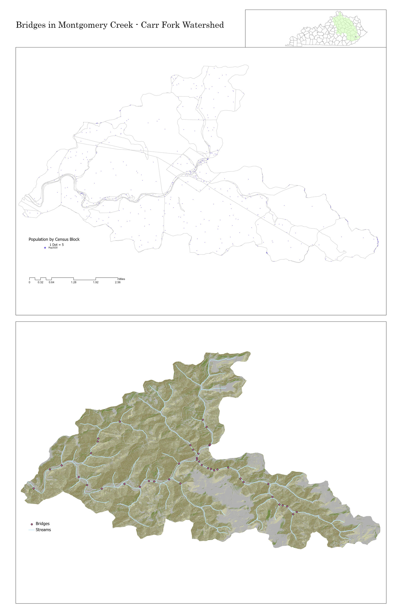
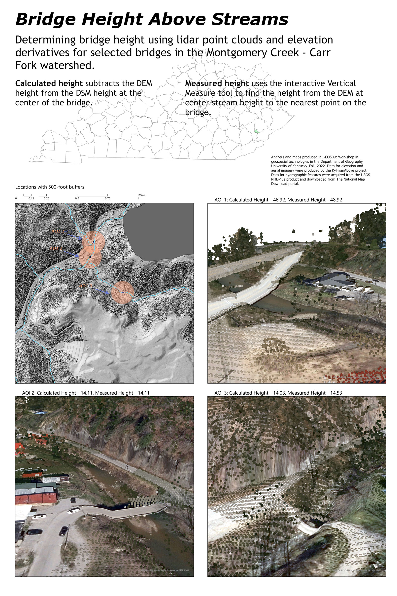
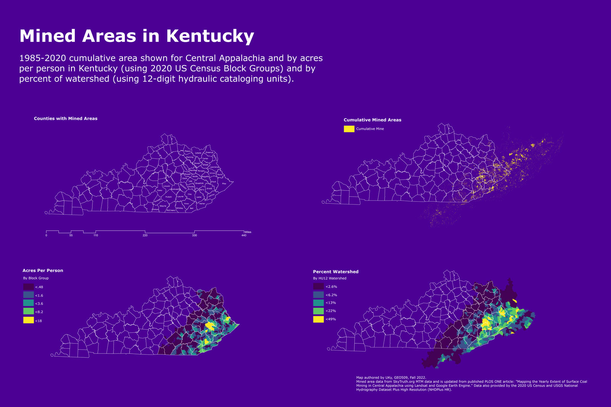

Montogmery Creek - Carr Fork Watershed
An analysis of flood-prone infrastructure and conditions in an Eastern Kentucky watershed.
A summary of goals, methodology, and results.
Click Here!
01: Community

High resolution version
02: Infrastructure

High resolution version
03: Inundation
04: Terrain

High resolution version